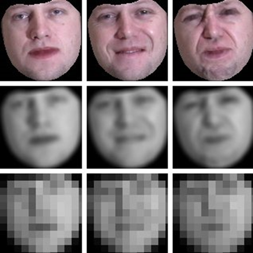
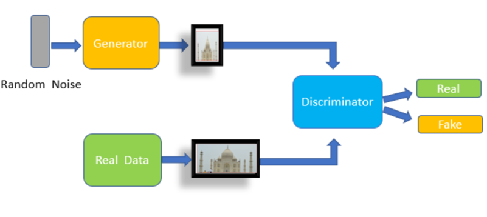
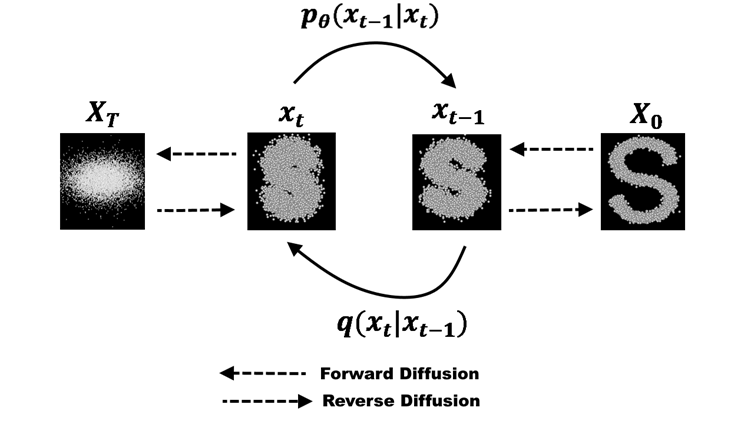
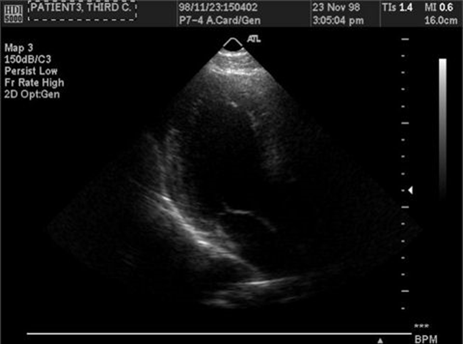
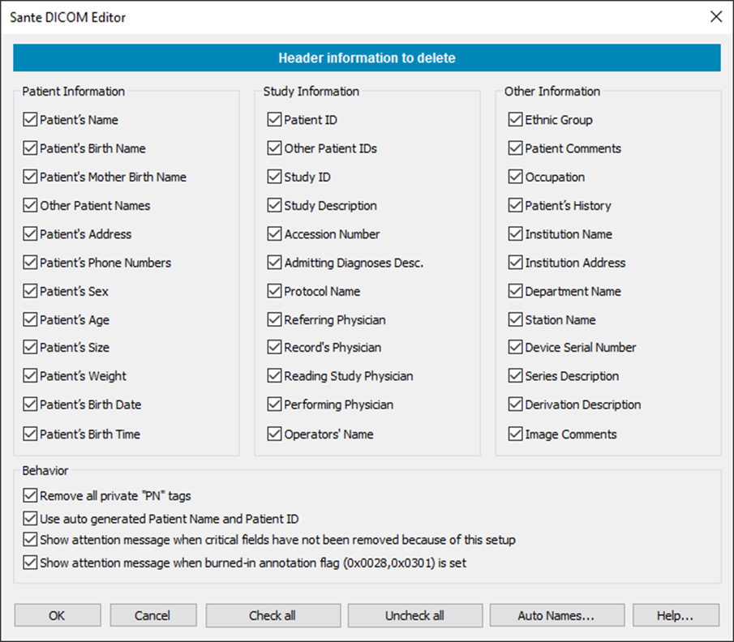
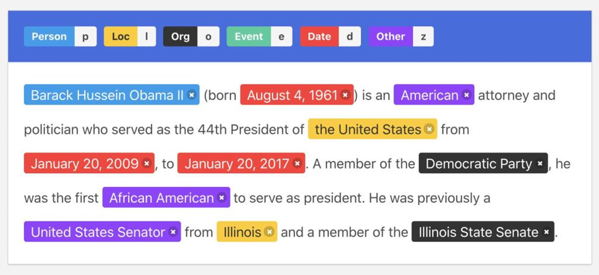
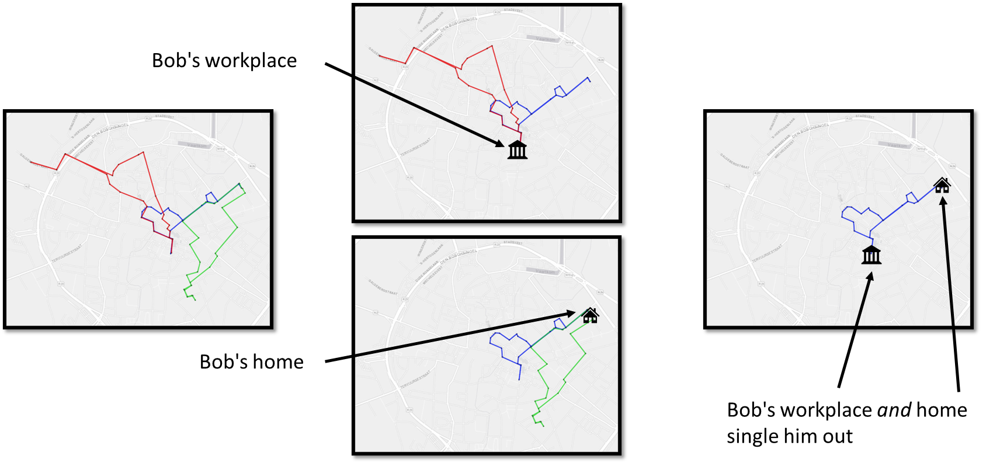

Privacy in unstructured data#
After several sessions focused on structured data—organized in tables with defined attributes—this lecture shifted attention to unstructured data, which includes information that does not conform to the row–column structure of databases. This encompasses a wide variety of content types: images, text, audio, video, location traces, and even genetic sequences. Such data is increasingly central to modern analytics and artificial intelligence but presents distinct privacy challenges because identifiers and sensitive attributes are not confined to specific fields or formats. Instead, personally identifiable information can appear in unpredictable ways: in pixels, words, metadata, or inferred patterns. The goal of privacy protection in unstructured data is therefore to prevent re-identification or attribute disclosure while maintaining the data’s usefulness for analysis, training, or sharing.
The Nature of Unstructured Data and Its Risks
Unlike tabular microdata, where the boundaries between attributes are explicit, unstructured data embeds information across multiple dimensions. A photograph, for example, may reveal not only the identity of the person it depicts but also contextual clues such as location, activity, or social connections. A text document can contain names, addresses, and descriptions of private situations scattered throughout natural language. Location trajectories can expose personal habits, routines, and even religious or medical visits. Genomic data uniquely identifies individuals and, by extension, their biological relatives.
The primary privacy threats remain the same—re-identification (linking a piece of data to an individual) and attribute disclosure (inferring sensitive facts about that individual)—but the mechanisms of these threats differ. In unstructured data, identifiers can be hidden in metadata, embedded in content, or inferred by machine learning models. For instance, digital photographs contain EXIF metadata such as timestamp, GPS coordinates, device brand, and camera model. Even if this metadata is stripped, image content itself can betray information: landmarks or building facades can reveal where the photo was taken, and unique sensor imperfections (like dead pixels) can identify the specific camera used—techniques exploited in forensic investigations and by intelligence agencies.
Privacy of image data#
Image Data and Visual Anonymization
Image data is one of the most privacy-sensitive forms of unstructured information, particularly when it contains human faces or other identifiable features. A person’s face is a direct biometric identifier, meaning that any image containing it can be linked to that individual with high confidence, especially given the sophistication of modern face recognition systems.
The traditional approach to protecting image privacy is masking or obfuscation—typically through blurring, pixelation, or blackening regions of an image that reveal identity, such as faces, license plates, or other sensitive objects. Backgrounds can also be blurred to prevent location inference. However, such techniques are increasingly insufficient. Deep learning–based recognition models have become capable of identifying individuals even from heavily blurred or low-resolution images, or from partial views such as silhouettes or unique clothing patterns.
More advanced protection techniques include the use of adversarial noise—tiny, carefully crafted pixel perturbations that are almost imperceptible to humans but can confuse machine learning models. These modifications, called adversarial examples, exploit the sensitivity of neural networks to small input changes, making the same face unrecognizable to an automated recognition system. However, adversarial perturbations are typically model-specific: they depend on knowledge of the recognition algorithm and are not guaranteed to protect against all possible models.
Another growing area is automated object detection and image segmentation, which can help identify regions that require anonymization. By combining these with natural language description systems (image captioning models), one can automatically detect and obscure sensitive elements such as people, medical instruments, or personal items. Still, there are no definitive quantitative measures of “privacy risk” for images; evaluation is often based on empirical testing—measuring whether a recognition model can still identify individuals after obfuscation.
In some contexts, such as medical imaging, the content itself may not be directly identifying. A radiograph, ultrasound, or MRI scan usually does not reveal a person’s identity visually. However, metadata associated with medical images can contain disclosive information such as patient names, hospital IDs, or timestamps. The standard format for medical imaging, DICOM (Digital Imaging and Communications in Medicine), stores extensive metadata alongside the image. Therefore, medical image anonymization focuses primarily on metadata removal—deleting or replacing all patient identifiers—and, when necessary, erasing burned-in text that may appear on the image itself. Many medical imaging systems already include built-in anonymization functions for this purpose.
In summary, protecting image data privacy involves a combination of content-based editing (blurring, pixelation, adversarial noise) and metadata sanitization, with the specific techniques chosen depending on the purpose of data sharing and the acceptable trade-off between visibility and privacy.
Synthetic Image Generation
A promising complement to traditional anonymization is the use of synthetic data generation, which creates artificial images that statistically resemble real data but correspond to no actual person. Initially, Generative Adversarial Networks (GANs) were used to produce realistic faces or medical images, and more recently, diffusion models have become the dominant approach, capable of generating high-fidelity and diverse synthetic datasets.
Synthetic images are particularly useful for training machine learning models when privacy restrictions prevent access to real data. They preserve aggregate characteristics such as lighting conditions, object shapes, or anatomical features, while removing any direct link to real individuals. However, synthetic data must be used with caution: if a generative model is trained on real data without adequate regularization or differential privacy, it can inadvertently memorize and reproduce fragments of the original, thus reintroducing privacy risk. For critical applications like clinical research, synthetic data may be used only for prototyping or pre-training, not for final analysis or publication.
Image data can be very disclosive. Besides identifying a person from a photo, their location can be found out from the background (OSINT) or from metadata. Metadata can also reveal the time a photo was taken, the type of camera, whether there is any manipulation, etc. Even artifacts in an image, such as dead pixels, can be used to link two photos taken with the same device.


Historically, the identity of people appearing in images has been protected by blurring or pixelating regions of the images (the background can be blurred, too) manually.


Automatic object detection and image segmentation can be used to ease this process. The combination of language models capable of describing images with image segmentation models makes this process even easier.

Some studies might require clean images. Generative models, such as GANs or diffusion models, can generate whole or partial images (inpainting) of objects that share the properties of the original but that do not exist.
 
In the case of medical images, while it is possible to generate synthetic data, it is not always desirable. Additionally, medical images, such as X-Rays, are not really disclosive, except for any metadata shipped along the image data.
Medical images (DICOM)#
DICOM (Digital Imaging and Communications in Medicine) is a standard for handling, storing, printing, and transmitting information in medical imaging. It includes a file format definition and a network communications protocol. The communication protocol is an application protocol that uses TCP/IP to communicate between systems. DICOM files can be exchanged between two entities that can receive image and patient data in DICOM format.
A DICOM data object consists of several attributes, including items such as name, ID, etc., and one special attribute containing the image pixel data. One of the attributes, the modality, represents the DICOM file type. Biomagnetic imaging Bone Densitometry (X-Ray) Computed Tomography Electrocardiography Endoscopy
Other DICOM image metadata include information about the patients, which can be removed. Patient’s Name Patient ID Patient’s Birth Date Patient’s Sex Patient’s Size Patient’s Weight Patient’s Address Patient’s Mother’s Birth Name
Additionally, images might contain burned-in annotations, which must be removed.

DICOM libraries and editor software include tools to anonymize DICOM images. DICOM Library, https://www.dicomlibrary.com Sante DICOM Editor, https://www.santesoft.com/win/sante-dicom-editor/howto/anonymize.html

Privacy of text data#
Redaction and Sanitisation of Documents#
Document redaction consists of removing or blacking out sensitive terms in plain textual documents. Alternatively, when sensitive terms are replaced (instead of removed) by generalisations (e.g. AIDS → disease), the process is more generically referred to as document sanitisation (Bier et al. 2009). Document sanitisation is more desirable than pure redaction, since the former better preserves the utility of the protected output. Moreover, in document redaction, the existence of blacked-out parts in the released document can raise awareness of the document’s sensitivity to potential attackers (Bier et al. 2009), whereas sanitisation gives no such clues. In both cases, two tasks should be performed: (i) the detection of textual terms that may cause disclosure of sensitive information, and (ii) the removal or obfuscation of those entities. Traditionally, the detection of sensitive terms has been tackled in a manual way. This requires a human expert who applies certain standard guidelines that detail the correct procedures to sanitise sensitive entities (National Security Agency 2005). Manual redaction has proven to be quite time-consuming and it does not scale to currently required levels of information outsourcing (Chakaravarthy et al. 2008; Bier et al. 2009). In recent years, numerous automatic redaction methods have been proposed. Some approaches rely on specific or tailored patterns to detect certain types of information based on their linguistic or structural regularities (e.g. names, addresses and social security numbers) (Sweeney 1996; Tveit et al. 2004; Douglass et al. 2005). Schemes such as Douglass et al. (2005) and Tveit et al. (2004) use more specific patterns to remove sensitive terms from medical records. These patterns are designed according to the HIPAA ‘Safe Harbor’ rules (Department of Health and Human Services, USA 1996) that specify eighteen data elements which must be eliminated from clinical data in order to anonymise a clinical text. As an alternative to manuallyspecified patterns, several authors have proposed using trained classifiers that recognise sensitive entities. Yet others present a tool that focuses on the sanitisation of documents directly linked to certain companies (Cumby and Ghani 2011). The data to be detected include words and phrases that reveal the company the document belongs to. Abril et al. (2011) propose a general scheme that uses a trained classifier for Named Entity Recognition (NER) (i.e. the Stanford NER [Finkel et al. 2005]) to automatically recognise entities belonging to general categories such as person, organisation and location names. This mechanism suggests generalising sensitive entities instead of removing them from the sanitised document. The goal is to achieve a certain degree of privacy while preserving some of the semantics. Jiang et al. (2009) provide a theoretic measure (‘t-plausibility’) that guides the sanitisation process in order to balance the trade-off between privacy protection and utility preservation. Their scheme tries to preserve the utility of sanitised documents by generalising terms based on general-purpose ontology/taxonomy. Finally, Sánchez et al. (2013) present a system that relies on information theory to quantify the amount of information conveyed by each term of the document. The latter work builds on Sánchez et al. (2012), where sensitive terms are generalised.
Text Data and Natural Language
Textual data, such as emails, medical notes, or social media posts, presents a different challenge. In contrast to structured databases where attributes are predefined, in natural language text, identifying or sensitive information can appear anywhere and in many forms—names, addresses, job titles, health details, or even contextually revealing phrases.
Anonymizing text involves two major steps:
Identification of sensitive content.
Transformation or masking of that content.
Early methods relied on manual redaction, in which human annotators read documents and removed or replaced sensitive terms. This process was labor-intensive and error-prone. Modern approaches rely on natural language processing (NLP) techniques, especially Named Entity Recognition (NER), which automatically detects entities such as person names, organizations, locations, dates, or numbers. Once detected, these elements can be anonymized through deletion (reduction) or generalization (sanitization). For instance, a sentence like “John Smith visited Hospital Clínic in Barcelona on 4 March 2024” might be transformed into “A patient visited a hospital in a European city in early 2024.”
The trade-off between privacy and data utility remains central: heavy redaction may render text meaningless for analysis, while minimal editing might leave residual risk. For certain applications, synthetic text generation (using large language models like GPT) can be used to replace sensitive segments with semantically similar but artificial descriptions.
The task of protecting the private information of the individuals mentioned in text documents are referred to in the literature as document redaction, sanitization, or anonymization. Whatever the name, it consists of two steps: detecting (potentially) disclosive pieces of text, and masking those pieces appropriately.

For many years textual data protection has been a highly manual process, and it still is. Usually, several human experts review the text and mask all items they deem usable to re-identify individuals and/or disclose confidential data on them. To reduce the burden of human experts, some systems that make use of Named Entity Recognition (NER) were introduced. NER was created to extract structured information, like person and organization names, locations, times or dates, from an unstructured text.
Early NER systems were based on handcrafted rules or regular expressions. For instance, times can be identified using the following pattern: “at” + digits + “am”/“pm”. Up until 2000, handcrafted rule systems offered the best results. Statistical approaches subsequently took over. In statistical NER systems, models such as HMM (hidden Markov models) are trained to locate a specific type of entity. With the development of deep learning neural networks, recurrent neural networks (RNN) and extensions of them such as long short-term memory (LSTM), and now Transformers, surpassed the accuracy of statistical NER systems.
Named entity recognition#

State of the art is based on transformers like BERT and ELMo. These are pre-rained on large amounts of data and characterize words according to their context. These are general-purpose NLP models, that can be tailored or fine-tuned to solve multiple tasks including NER, but also sentiment analysis, text generation, question answering, summarization, or machine translation.

Hassan et al. (2023) propose a more general and flexible solution for textual data protection. By means of word embeddings they build vectors that numerically capture the semantic relationships of the textual terms appearing in a collection of documents. Then they evaluate the disclosure caused by the textual terms on the entity to be protected according to the similarity between their vector representations. Their method limits the semantic loss of the document by replacing disclosive terms with privacy-preserving generalizations.
Privacy of location data#
Location, Trajectory, and Genetic Data
Although discussed briefly, location and movement data are particularly sensitive because they reveal patterns of behavior. Repeated location points or trajectories can re-identify individuals even when names are removed; for example, a few geolocation points often suffice to identify a person’s home and workplace. Techniques to anonymize location data include spatial generalization (reducing coordinate precision), temporal aggregation (grouping events into time intervals), and random perturbation (adding noise to coordinates).
Genetic data, while technically structured, behaves like unstructured data in terms of privacy because it uniquely identifies individuals and their relatives. True anonymization of genomic data is virtually impossible, as even small segments of DNA can act as identifiers. Thus, privacy protection in genomics often relies more on controlled access and strict governance than on technical anonymization.
In this topic, we describe privacy issues and protections for unstructured data. We will talk about images, text, location, and genetic data. Privacy metrics and risks are harder to characterize in such data, and protection mechanisms often make use of combinations of techniques, such as generalization, noise addition, and synthetic data generation. Current advances in DL are offering new tools to deal with many of these issues.
Trajectory data is highly unique and regular. Additionally, all points in a trajectory are both quasi-identifiers and sensitive information. Knowing only a few locations may allow attackers to re-identify persons and to infer additional information.


Privacy of genetic data#
Genomic data is collected from biological samples in the health-care system and often shared with research organizations. Other sources of genetic data come from direct-to-consumer tests (e.g., MyHeritage.com) or from law enforcement or forensic investigations.
SNPs (single nucleotide polymorphism) are locations within the human genome where the type of nucleotide present (A,T,G, or C) can differ between individuals. SNPs are the most common type of genetic variation found among people. SNPs occur roughly every 300 nucleotides, and since there are 3 billion nucleotides in the human genome, there are approximately 10 million SNPs. Over 99% of the genome is identical between individuals, so SNPs provide researchers a way to study the genetic root of the differences that are apparent across the human race. Although most SNP’s have no effect on health, they can be important tools for genetic research. For example, SNPs are the basis for genome wide association studies (GWAS) that allow researchers to determine regions of the genome that may be important in disease development. Since SNPS are hereditary and shared by individuals of common descent, they can also be used to track ancestry.

Privacy risks of genomic data processing: Re-identification. Sharing individual-level genomic data, even without explicit identifiers, creates an opportunity for re-identification. For example, a data recipient could infer phenotypic information from genomic data (or vice versa) that may be leveraged for re-identification purposes. Membership inference. In genome–phenome investigations, such as GWAS, researchers commonly publish only summary statistics that are useful for meta-analyses. However, these might be vulnerable to membership inference attacks, whereby it is possible to discover an identified target’s participation in the GWAS as part of a potentially sensitive group. Reconstruction and familial search. Due to the similarity of relatives’ genomic records, even if someone’s genomic record has never been shared or even generated, their genotypes and predispositions to certain diseases can be inferred to a certain degree from their relatives’ shared genotypes.